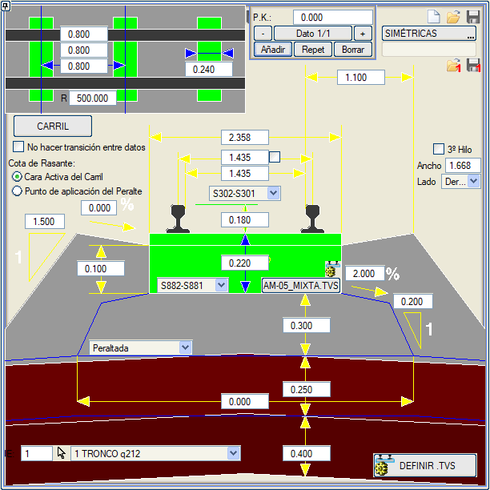
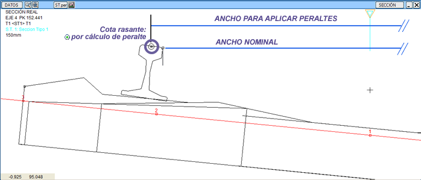
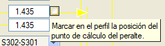
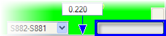
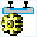
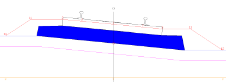
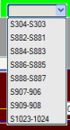
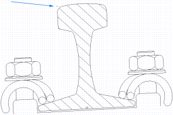
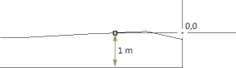

| |
|
HAT VE TRAVERS. DEMİRYOLU PLATFORMU
|
Genel Bilgiler Bu menüden, girilen verilerin grafiksel bir görünümünü sunan bir piktografik temsile sahip bir modele göre, platformun belirli elemanları için değerler tanımlanabilir. Ayrıca bu pencereden, bu tanımın tamamını içeren .via uzantılı dosyalar oluşturulabilir ve örneğin, özel geometrilere sahip (RENFE, AVE, FEVE, Madrid Metrosu,...) birkaç .via dosyasına sahip olunabilir. 
Şekilde tanımlanan parametreler şunlardır:
Her bir hat ve travers bölümü için, traversler arasında üç farklı mesafe ve bir kesme yarıçapı tanımlamak mümkündür: bir mesafe aliymanlar ve kesme yarıçapından büyük veya eşit yarıçaplı kurplar için, diğeri klotoidler ve belirli bir değerden büyük veya eşit yarıçaplı kurplar için ve başka bir mesafe daha küçük yarıçaplar için. Bu tanım, genleşme derzleri (AD-MF.apv ve AD-FM.apv) gibi kendi dağılım ve travers mesafelerine sahip makaslar veya konvansiyonel makasların (makaslar, ...) topukları ardından gelen önceden tanımlanmış traverslerle birleştirilebilir. Bu verilerin beyan edilmesi, HAT AÇIKLIKLARI ve PLATFORM gibi diğer menülerde, [OTOMATİK] düğmesine basıldığında, önceki şemadan türetilebilen kesitin temel verilerinin aktarılmasına olanak tanır. Çift hatlı kesitler için, sol ve sağ hat için farklı parametrelerle asimetrik kesitler tanımlamak mümkündür. Böylece örneğin, aynı kesitte bir YHT hattı ve bir konvansiyonel hat bulunması mümkündür. Tanımlanan hat ve travers verilerini 3B olarak çizebilmek için Raylar_Ve_Travers.lil çizim modunu kullanabiliriz. Veriler arasında geçiş yapma seçeneği ile, bir KM için girilen değerler bir sonraki KM'ye kadar sabit tutulur. Kırmızı kot uygulaması: Kırmızı Kot Kotu: İki seçenek kabul edilir Rayın Mantar Yüzeyi: Kırmızı kotun alçak rayının konumu, rayın mantar yüzeyinin konumundadır. Dever Hesaplama Noktası: Örneğin, 1435 nominal genişlik ve 1500 hesaplama genişliği için, b noktası a'dan 32.5mm uzaklıktadır. 65mm'lik bir ray için bu, ray kafasının orta noktasıdır. Kod 2 (ve çift hatta 1) bu noktanın dikeyine kaydırılır. Rayların altındaki minimum kalınlıklar da bu noktaya taşınır.  Dever uygulaması için Genişlik değerinin yanındaki kutucuk etkinleştirildiğinde, uygulama noktası profilde görünür bir sembolle [Dever_DY] işaretlenebilir.  Üçüncü Ray: [ ] 3. Ray seçeneği ile her hat için bir üçüncü ray tanımlanabilir. Bu, bu rayın kullanacağı hat açıklığı ve hattın hangi tarafında görüneceği verilerek tanımlanır. Prensip olarak genişlik, ana hattınkinden büyük veya küçük olabilir, ancak hat aralığı ekseninin ana iki rayın orta noktasında olduğu dikkate alınmalıdır. Bu bilgi bölümlere ayrılabilir ve çift hatta sağ ve sol için farklı olabilir. Hatların herhangi bir bölümü için bir üçüncü ray tanımlandığında, ilgili BIM nesnesi oluşturulur ve planda gösterilir. Estructura_Doble.isa örneğinde, eksen 2'nin her iki hattının sağ tarafında bir üçüncü ray tanımlanmıştır. Nominal genişlik ve Dever genişliği: Hat açıklığı iki değere ayrılır:
Travers geometrisi: Her bölüme bir travers geometrisi ilişkilendirmek mümkündür:  Bu geometri, Araç  'dan oluşturulabilen ve değiştirilebilen .tvs dosyalarında tanımlanır. İki tür geometri vardır:
BIM oluşturucu bu geometriyi kullanır ve traverslere yaklaştığımızda Sanal 3B görüntüleyicide görülür. Kurulumla birlikte gelen FFCC_BIM.isa örneği, her eksende her türden birini kullanır. (Makas traversleri değişken uzunluklu kutular olarak kalır) Kaydet 1 ve Yükle 1 seçenekleri aracılığıyla, bir KM'ye karşılık gelen parametreleri diğer bölümlerde kullanmak üzere kaydetmeye olanak tanır. RHEDA Plakalı Hat Eğer Alman RHEDA 2000® modeline benzer bir plakalı hat ise, plakanın altındaki beton tabanın genişliği, omuzların eğimi ve yanal şevi tanımlanır (modelin mavi çizgisi). Bu tür bir kesitin inşa edilmesi için, bu tabanın genişliğinin traversin genişliğinden daha büyük olması gerekir. Beton taban, subbalastın üst yüzeyine oturur. Tabanın yanlarında, bu subbalast üst yüzeyi PLATFORM menüsünden tanımlanan P4 eğimini alır. Betonarme taban geometrisi için aşağıdaki olanaklar kabul edilir:

Ray ve Travers için Sembol Kullanımı ISTRAM®/ISPOL® rayları ve traversi temsil etmek için semboller kullanır. Raylar için kullanılan semboller şunlardır:
Traverslerin grafik gösterimi için birkaç farklı sembol seti arasından seçim yapılabilir:
Bu sembollerin seçimi bölümlendirilebilir, böylece gösterim KM'ye bağlı olarak değiştirilebilir. Kullanıcı, bu sembol çiftlerini kendi yerel veya kullanıcı kütüphanesindeki kendi sembolleriyle değiştirebilir, ancak sunulan numaralara saygı göstermelidir. Semboller ‘ters ölçekli’ olarak boyutlandırılmalıdır, yani eğer ray yüksekliği 0,179 m değerindeyse, sembol 1,0 metreye karşılık gelen görünüme sahip olmalıdır, sadece bu şekilde ISTRAM®/ISPOL® sembolü menüde beyan edilen değerle yeniden üretebilir (travers için de aynı durum geçerlidir). 1/20 (tipik) açılı rayların yerleştirilmesi durumunda, ortaya çıkan geometrik hatalar milimetreden küçük olduğu için karmaşık bir ayarlama yapmaya gerek olmadığı gözlemlenmiştir. Rayın yerleştirme noktası (0,0) (mavi okla işaretli), kot olarak ray mantarına karşılık gelir. 1 metrelik boyut, ray mantarı ile ray tabanı arasındaki ölçüye karşılık gelir. Rayın gerçek yüksekliği belirtildiğinde, ISTRAM®/ISPOL® sembolün 1 metrelik bir yükseklikle tasarlandığını düşünerek bir ölçek faktörü uygular. Travers durumunda, ISTRAM®/ISPOL® onu, yerleştirme noktasını 3 koduna (solda, sağda -2) konumlandırarak yerleştirir, bu nedenle sembolün doğru tanımlanmış olması önemlidir. Bu durumda, resimde gösterilen boyuta 1 m'lik bir travers yüksekliği atanmıştır (böylece daha sonra ölçekleme uygulaması doğru olur). Traversin ucunun konumu 0,0 koordinatında yer alır. Genişliği orijinal boyutta ve yüksekliğe karşılık gelen ölçekte olmalıdır. Eğer S888-S887 veya S907-S906 sembol çiftini seçersek, bunları doğru kullanmak için traversin yüksekliğini ve genişliğini ray genişliğine göre ayarlamalıyız, böylece raylar doğru noktaya oturur. Ray Bu alt diyalog kutusu, rayları BIM'de gösterimlerinde kesmek için bir dizi parametre tanımlamaya olanak tanır:
[Gerçek kaynakları .top'tan ekle] düğmesi, gerçek kaynakları içeren bir .top dosyasını yüklemeye ve bunları tabloya dahil etmeye olanak tanır.  Diyalog kutusunda gösterilen anahtarların anlamı:
|